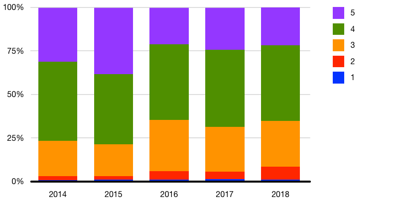
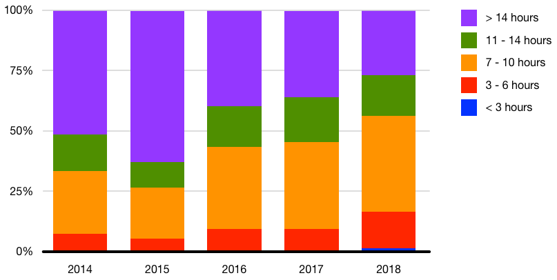
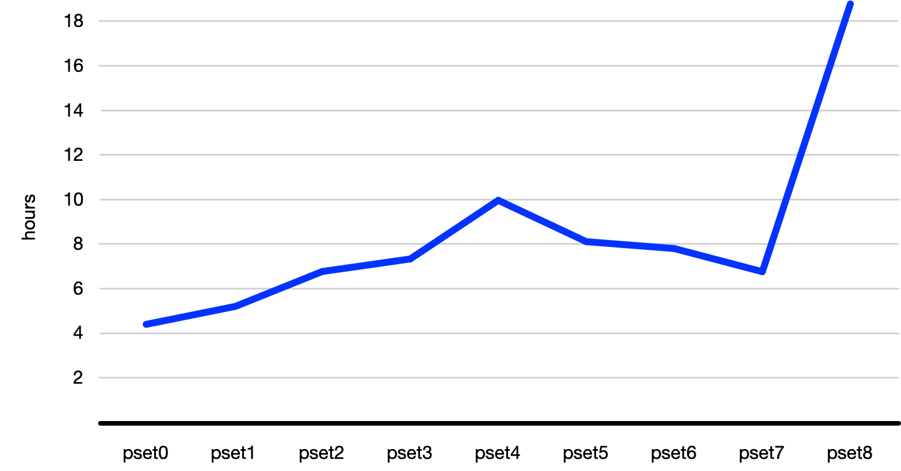

FAQs
Email heads@cs50.harvard.edu with any other questions!
Curriculum
Which languages will I learn?
Rather than teach just one language, CS50 introduces students to a range of “procedural” programming languages, each of which builds conceptually atop another, among them Scratch, C, Python, SQL, and JavaScript. In the course’s final weeks will students also learn a bit of HTML and CSS (which are languages but not programming languages). The goal, ultimately, is for students to feel not that they “learned how to program in X” but that they “learned how to program.”
Why does CS50 use C?
See this answer on Quora!
Gen Ed
Does CS50 satisfy a Gen Ed requirement?
Yes. You may take CS50 to fulfill the Science and Engineering and Applied Science distribution requirement or the Quantitative Reasoning with Data requirement, but not both.
Laptops
If my laptop isn’t working, can I borrow one?
Yes, SEAS Computing has a (small) number of loaner computers that they can loan out for a couple of weeks at a time. They arent’t replacements, just a way of not falling too far behind while you either get your current machine repaired or procure a new one. Email ithelp@harvard.edu to arrange.
Prior Experience
Does CS50 have any prerequisites?
No, CS50 does not assume any prior CS or programming experience. In fact, 66% of Fall 2018’s students had never taken a CS course before!
Should I skip CS50 if I already took AP CS A?
Probably not. Most students who have taken AP CS A still take CS50 as it tends to fill in gaps in their knowledge and also introduces them to C (and more!).
Semesters
When is CS50 offered?
CS50 is offered primarily in fall term. All students, including concentrators and non-concentrators, are encouraged to take CS50 in fall term. However, concentrators and secondaries unable to take the course in fall term may take a spring version of CS50.
How does spring term differ from fall term?
In fall term, students are expected to attend live lectures as well as live, TF-led sections. In spring term, students are expected to watch lectures on video (produced in fall term) and attend live, preceptor-led classes.
Academically, the terms are equivalent, but the fall version of CS50 includes cultural traditions as well.
| Fall | Spring | |
|---|---|---|
| CS50 Fair | ✓ | |
| CS50 Hackathon | ✓ | |
| CS50 Lunches | ✓ | |
| CS50 Puzzle Day | ✓ | |
| Enrollment | Unlimited | Limited |
| Final Project | ✓ | ✓ |
| Grading Basis | SUS or LG | SEM/UEM |
| Lectures | Live | Video |
| Meetings | TF-led sections | Preceptor-led classes |
| Office Hours | ✓ | ✓ |
| Problem Sets | ✓ | ✓ |
| Quizzes | ✓ | ✓ |
| Simultaneous Enrollment | ✓ | |
| Supersections | ✓ | |
| Test | ✓ | ✓ |
| Tracks | ✓ | |
| Tutorials | ✓ | ✓ |
Simultaneous Enrollment
Can I simultaneously enroll in CS50 and another course that meets at the same or overlapping time?
Only in fall term, not in spring term.
Workload
How difficult is CS50?
For many students, CS50 is simply more time-consuming than it is difficult. Starting each week’s problem set early, then, makes things easier! And the course’s difficulty was also recalibrated back in 2016, per the Q data below.

How much work is CS50?
Although the course’s workload had been on the rise in recent years, the course’s workload was recalibrated back in 2016, per the Q data below.

By mid-semester, most students spend 10+ hours per week on the course’s problem sets, but it definitely varies by problem set, per the below, and student.

Note that, in Fall 2019, students had two weeks to complete Problem Set 8, compared to one week for each of the other problem sets.